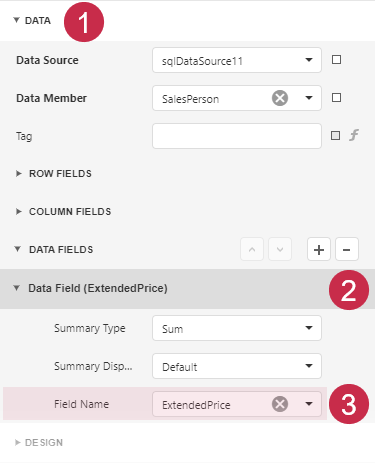
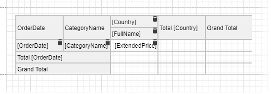

Cross-Tab Reports
A cross-tab report displays complex multi-dimensional data, such as summary statistics, surveys, and market research information. This report uses a Cross Tab control that calculates automatic summaries and grand totals across grouped rows and columns.

Add a Cross Tab Control and Bind to Data
Drop the Cross Tab control from the Toolbox onto the Detail band.

You cannot place a Cross Tab in another report control (Table Cell or Panel).
Invoke the designer menu and click Add Data Source....

Navigate through the invoked Data Source Wizard's pages to set up the data source. See the Bind to Data section for more information.
Select the entire Cross Tab control. For this, click the designer surface outside the control and drag the mouse to the control until the entire control is selected.

Bind the Cross Tab control to the data source. In the Properties Panel expand the CROSS TAB TASKS section and specify the Data Source and Data Member properties.

Note
Ensure that a report's Data Source property is not set if you place the Cross Tab in the Detail band. Otherwise, the Cross Tab data is printed as many times as there are rows in the report data source.
Define Cross Tab Fields
In the Properties Panel, expand the DATA section and click plus in the ROW FIELDS section to add a Row Field. Select the field name from the drop-down list:

You can repeat these steps to add another row field.
In the Properties Panel, expand the DATA section and click plus in the COLUMN FIELDS section to add a Column Field. Select the field from the drop-down list:
You can repeat these steps to add another column field.
In the Properties Panel, expand the DATA section and click plus in the DATA FIELDS section to add a Data Field. Select the field from the drop-down list:

The resulting cross-tab control looks as follows:

Specify Group Settings
Select the Cross Tab cell bound to the OrderDate field and click its smart tag. Set the GroupInterval property to DateQuarter to group data by quarters.

Switch to the Report Viewer to preview the result:

Format Data
Format the currency data. Hold down CTRL, and select the following cells:
- the cell bound to the
ExtendedPricefield - the cells that display column and row totals
the cells that display column and row grand totals

Switch to the Properties window and set the
TextFormatStringproperty to {0:c}.
- the cell bound to the
Select the cell bound to the
OrderDatefield:
Set the Text Format String option to
Quarter {0}.
Switch to the Report Viewer to observe the result:

Customize Appearance
Select the entire Cross Tab control, switch to the Properties window, and expand the STYLES section. Expand the GENERAL STYLE section and set the Border Color to 160, 160, 160. This value applies to all Cross Tab cells.

Expand sections for the HEADER AREA, DATA AREA and TOTAL AREA styles and adjust the appearance as your needs dictate.
Adjust the Content Size
Select the column bound to the FullName field and set the ColumnAutoWidthMode property to ShrinkAndGrow. The column width varies depending on the content.
Adjust the Report Layout
Specify the Landscape page orientation and set the Vertical Content Splitting option to Smart to prevent content from being split across pages.

Observe the Result
Switch to the Report Viewer. The resulting report is shown below: